Como gestionar un permiso¶
Para poder continuar el proceso de aprobacion de un permiso, desde el panel principal, podremos ingresar a Permisos, donde visualizaremos el listado de permiso, localizamos el permiso.
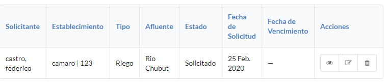Nos dirigimos al icono inspeccionar, para ver en detalle el estado del permiso.
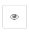 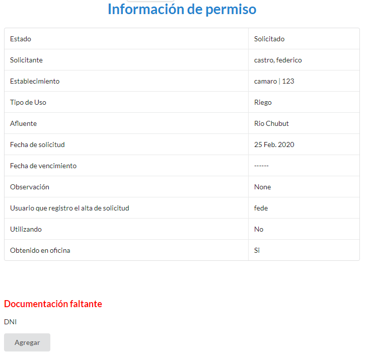Agregar Documentos¶
Debemos completar toda la documentacion faltante, que se especifica debajo de Documentación faltante, cuando contemos con alguna informacion faltante, debemos dirigirnos al boton Agregar.
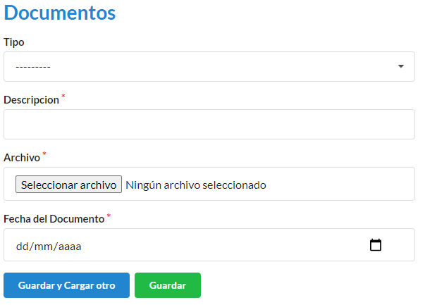Para ingresar un documento, en la pantalla deberá completar los campos Tipo (para este caso, aparecera un desplegable con los documentos faltantes), Descripcion, Archivo (Se nos abrira un explorador de archivos, el cual debemos ubicar el archivo del documento a subir), Fecha del documento (Se registrara la fecha en que fue entregada la documentación)
Completada toda la documentacion requerida, nos encontraremos con este mensaje. El visado es el tramite legal donde se corrobora que el documento presentado sea el correcto.
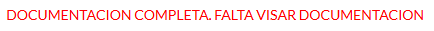Visar Documentos¶
Para realizar el visado, debemos ir al boton de acción y dirigirnos a Ve Documentación Presentada.
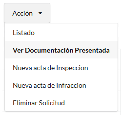Encontraremos el listados de los documentos presentados, con la descripcion de el estado en que se encuentra cada uno.
Los documentos presentan la siguiente informacion, junto con un boton de acción donde nos da las opciones de:
Rechazar en caso de que el documento presente algun error. Visar en caso de que el documento sea correcto. Modificar en caso de que se necesite hacer un rectificacion sobre el documento en cuanto a los datos cargados. Eliminar en caso de error en la carga.
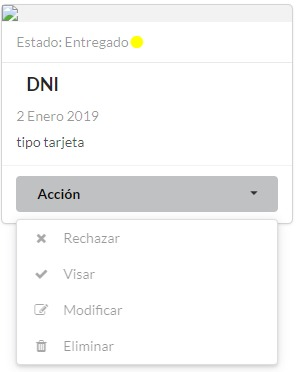La accion de Rechazar es para cuando un documento no cumple con los requisitos o no sea valido. Esta accion cambia el estado del permiso a Revisado

La accion de Visar es para cuando el documento es correcto. Esta accion puede cambiar el estado del permiso a Visado,
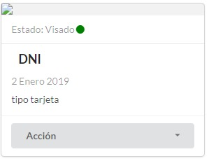La accion de Modificar nos abrira una nueva ventana, donde podremos modificar todos los datos. Esta accion no cambia el estado del permiso.

La accion de Elminar es para cuando se desear borrar el documento presentado, nos preguntara si estamos seguros de realizar esta accion. Esta accion no cambia el estado del permiso.
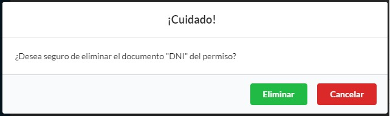Agregar Expediente¶
Cuando la toda la documentacion esta cargada y visada, dentro del persmiso nos encontaremos con un cartel DOCUMENTACION COMPLETA y un boton que nos pedira que ingresemos el numero de expediente.
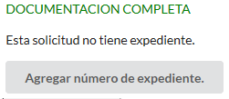Para terminar de ingregar el numero de expediente, debemos completar Descripcion, Archivo, Fecha del documento, Numero de expediente

Agregar Edicto¶
Leugo de ingresado el expediente, se debe generar un edicto, el cual debe ser publicado dentro del boletin oficial y en al menos 1 diario local.

Debemos completar Descripcion, Archivo, Fecha del documento, Tiempo de publicacion (en dias)
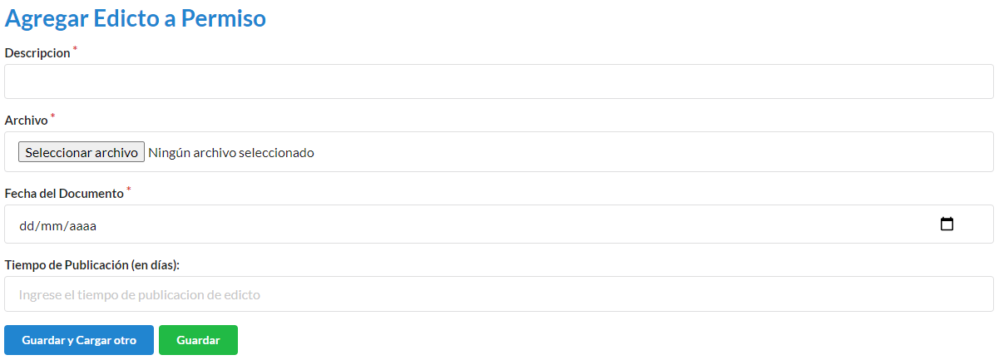Mientras estemos dentro de los dias de publicacion, puede que lleguen oposiciones o en caso de que no existan se realiza la resolucion para otorgar el permiso. Tendremos la opcion de Agregar Resolucion o Agregar Oposicion
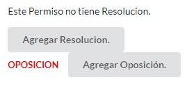Agregar Resolucion¶
Debemos completar Descripcion, Archivo, Fecha del documento, Unidades, Fecha del primer cobro (nos aclara la fecha maxima del cobro), Fecha de venciminto.

Luego de agregada la resolucion el Permiso se encuentra Otorgado

Como crear un nuevo establecimiento¶
Para ingresar un nuevo establecimiento, en la pantalla deberá dirigirse a Establecimientos

Luego nos dirigimos a Nuevo Establecimiento
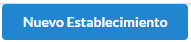En el formulario debemos completar los campos Dueño (este debe ser el solicitante), Codigo catastral, Superficie (esta sera tomadas en m2), Nombre (nombre del establecimiento), Descripción. Los campos con * son obligatorios. Completados los campos se podra Guardar o Guardar y Cargar otro.
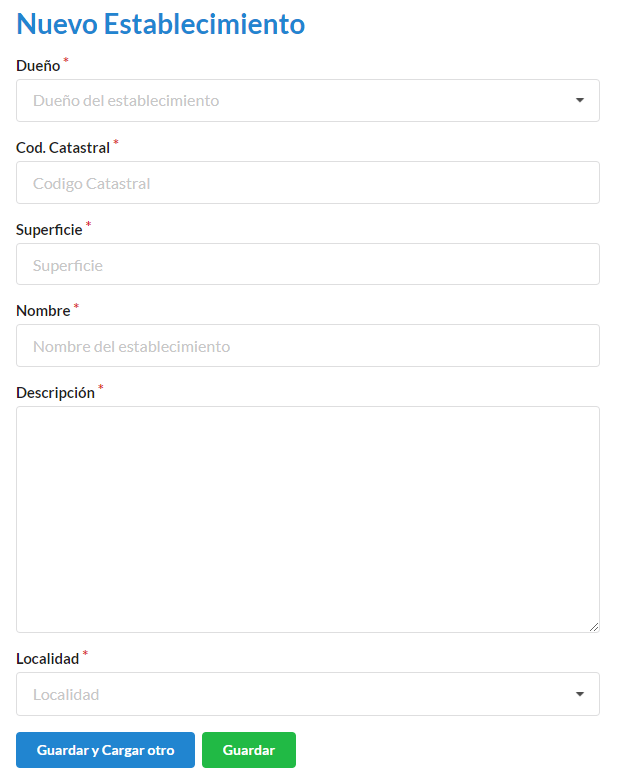Como crear un nuevo tipo de uso¶
Para ingresar un nuevo tipo de uso debemos ir a Tipo de Uso
Luego nos dirigimos a Nuevo Tipo de Uso

En el formulario debemos completar los campos Descripción (este sera el nombre del tipo de uso), Coeficiente (este puede ser un numero real), Periodo (para este caso, aparecera un desplegable con los periodos vigentes), Medida (para este caso, aparecera un desplegable con los periodos vigentes), Tipo de modulo (para este caso, aparecera un desplegable con los tipo de modulos vigentes), Documentos requeridos (para este caso, aparecera un desplegable con los documentos vigentes. Pueden tener mas de 1 documento asignado). Los campos con * son obligatorios. Completados los campos se podra Guardar o Guardar y Cargar otro.

Como crear un nuevo tipo de documento¶
Para ingresar un nuevo tipo de documento debemos ir a Tipos de Documentos.
Luego nos dirigimos a Nuevo Tipo de Documento.
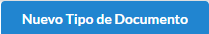En el formulario debemos completar los campos Nombre.